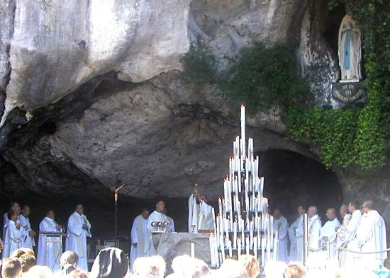

Eucharist, also called Holy Communion or Lord’s Supper, in Christianity, ritual commemoration of Jesus’ Last Supper with his disciples. The Eucharist (from the Greek eucharistia for “thanksgiving”) is the central act of Christian worship and is practiced by most Christian churches in some form. Along with baptism it is one of the two sacraments most clearly found in the New Testament
Receiving the Eucharist is one of the most important things we can do as a catholic. Holy Communion is the most important of all the sacraments. It completes the Sacraments of Initiation. The bread and wine we receive at communion is the body and blood of Jesus. It becomes the bread and body of Jesus through Transubstantiation. Transubstantiation is the conversion of the substance of the Eucharistic elements into the body and blood of Christ at consecration, only the appearances of bread and wine still remain. We participate in the sacrament of communion to commemorate all that Jesus did for us and getting nailed to a cross so we can be free from sin and have eternal life in heaven. The Lord gave us the sacrament of communion on Holy Thursday at the Last Supper. After first washing the feet of the disciples, he then did the breaking of the bread. Jesus said “Take, eat, this is my body” after Jesus said this he did the same for the wine saying “Drink from it, all of you, for this is my blood of the new covenant, which is shed for many for the remission of sins”. This shows us how Jesus himself is the bread and wine us Catholics receive at Holy Communion. The sacrament of Communion is the only one of the seven sacraments that we are actually receiving Jesus directly, along with having a grace bestowed upon us.Religion remains the only unifying factor among different people globally regardless of the social status, gender, age, political affiliation and skin color. The world has many religions that people believe in although all religions believe in one Supreme Being who created the universe.